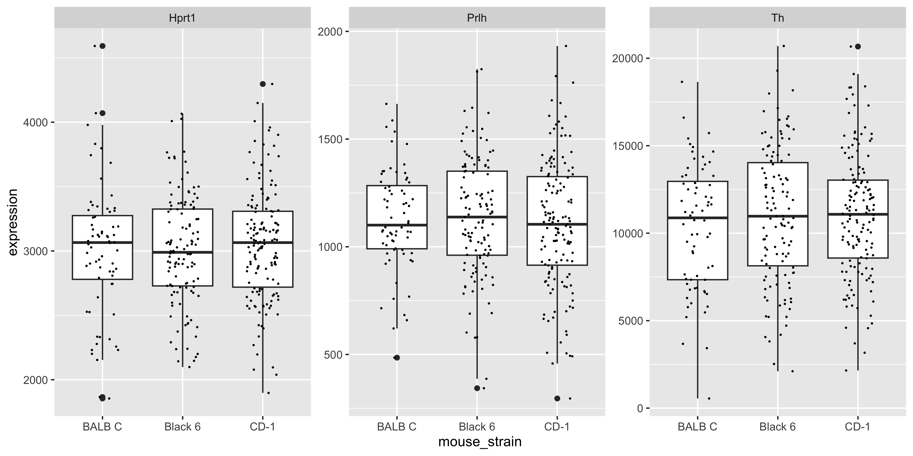

load('data_processed/mousezempic_cleaned_joined.Rdata')Statistics in R Primer
In the second half of this book we will use statistics in R for exploratory data analysis, bioinformatics and machine learning. At this juncture its helpful to distinguish three domains in which we’ll apply statistics
general linear modelling in tidyverse workflows
linear modelling for differential gene expression testing
machine learning for sample classification
Linear modelling in the tidyverse
Linear models are very useful for testing for significant associations between variables, or significant differences between groups. They have the advantage of being able to correct for the effects of other variables, and thereby remove unwanted sources of variation that could otherwise reduce our ability to discover true relationships.
Linear modeling is essentially a two-step process: fitting a straight line through the data (making a linear model of the relationship between x and y), and then testing whether the slope of that line is ‘greater than would be expected by chance’ via a hypothesis test. In practice the slope and variance around the fitted line, and the p value for the hypothesis test, are estimated using a single function and reported in the same summary table.
In the R tidyverse, plotting data is a central part of exploratory data analysis, with ggplot2 as the foundational package. We will reuse the data from Chapter 5 to investigate linear modeling in the tidyverse.
First we load the .Rdata file to restore the environment objects (data frames) we created:
library(tidyverse)
library(tidyrstats)Testing differences between groups (discrete x)
Long format data works seamlessly with ggplot(), as follows:
m_exp_rep_summed# A tibble: 1,359 × 4
id_num group gene expression_level
<dbl> <chr> <chr> <dbl>
1 1 treatment Th 6204.
2 1 treatment Prlh 1045.
3 1 treatment Hprt1 3029.
4 2 treatment Th 10738.
5 2 treatment Prlh 1568.
6 2 treatment Hprt1 3669.
7 3 treatment Th 12918.
8 3 treatment Prlh 813.
9 3 treatment Hprt1 4297.
10 4 treatment Th 10892.
# ℹ 1,349 more rowsm_exp_rep_summed %>%
ggplot(aes(x=group,y=expression_level)) +
geom_boxplot() +
facet_wrap(~gene, scales='free')
Often in an exploratory data analysis, we want to quickly test for statistically significant differences in the data we have just plotted.
Here, we want to test the differences in mean gene expression by treatment, for each gene. The lm_test() function from tidyrstats allows us to do this using the exact same data format required for ggplot.
lm_test() is simply a wrapper for some fairly awful code that we would otherwise have to use here (in the form data %>% do(broom::tidy(lm(y~x, data = .)).
Let’s see how this works below, by grouping the data so that we have a separate test for each gene:
m_exp_rep_summed %>%
group_by(gene) %>%
lm_test(expression_level ~ group)Results for linear model: expression_level ~ group# A tibble: 6 × 6
gene term estimate std.error statistic p.value
<chr> <chr> <dbl> <dbl> <dbl> <dbl>
1 Hprt1 intercept 2951. 43.3 68.1 2.07e-239
2 Prlh intercept 906. 25.0 36.3 8.43e-136
3 Th intercept 9192. 333. 27.6 6.94e- 99
4 Prlh grouptreatment 218. 28.7 7.60 1.72e- 13
5 Th grouptreatment 1716. 382. 4.49 9.12e- 6
6 Hprt1 grouptreatment 72.4 49.7 1.46 1.46e- 1We can ignore the intercept term rows, and inspect the p value column for significant values (p<0.05).
We see that Prlh and Th show significant differences in expression between treatment and control groups. In the model formulation expression_level ~ group, the control group mean is the intercept, and the treatment group is the tested term.
Testing differences relative to 0 (discrete x)
If we use lm_test(expression_level ~ 0 + group) we will get the mean expression per group as the estimate, and the difference in each group mean from 0, is tested. However, the differences between the mean gene expression levels in each group, are not directly tested:
m_exp_rep_summed %>%
group_by(gene) %>%
lm_test(expression_level ~ 0 + group)Results for linear model: expression_level ~ 0 + group# A tibble: 6 × 6
gene term estimate std.error statistic p.value
<chr> <chr> <dbl> <dbl> <dbl> <dbl>
1 Hprt1 grouptreatment 3023. 24.4 124. 0
2 Prlh grouptreatment 1124. 14.1 79.9 2.01e-268
3 Hprt1 groupcontrol 2951. 43.3 68.1 2.07e-239
4 Th grouptreatment 10908. 188. 58.2 9.99e-212
5 Prlh groupcontrol 906. 25.0 36.3 8.43e-136
6 Th groupcontrol 9192. 333. 27.6 6.94e- 99Note that the p values are wildly significant (because every gene in each group has vastly higher expression than 0). However, we cannot easily conclude whether the treatment is having a significant effect on gene expression compared to control.
To answer this question requires a second round of specific pair-wise ‘contrast testing’, which is most relevant for RNA sequencing analysis, covered in later chapters.
Testing associations between variables (continuous x)
We can also test for associations between a continuous x and a continuous y variable, using lm_test(). To plot expression of different genes in a scatter plot, values for each gene must reside in separate columns
m_exp_rep_summed_wide %>%
ggplot( aes(x = Th, y = Prlh)) +
geom_point() +
geom_smooth(method='lm')
The same tibble can be fed directly into lm_test() to test the significance of the Prlh ~ Th gene expression association described by the geom_smooth() line above.
m_exp_rep_summed_wide %>%
lm_test(Prlh ~ Th)Results for linear model: Prlh ~ Th# A tibble: 2 × 5
term estimate std.error statistic p.value
<chr> <dbl> <dbl> <dbl> <dbl>
1 intercept 1035. 40.6 25.5 2.02e-89
2 Th 0.00348 0.00366 0.948 3.43e- 1The y intercept is ~1000, and for each incremental unit of increase in expression of Th, Prlh is predicted to increase by a further 0.003 units. This association is not significantly stronger than would be expected by chance, as the T statistic is 0.9, and the p value for the T test is 0.34.
Correcting for covariates
Thus far we have tested relationships between a single covariate and a response (y) variable.
Often we want to ensure that other possible sources of variation are minimized so that we can better detect true differences, aka test our ‘main effect of interest’. Say we want to understand whether the Mousezempic dosage affects gene expression regardless of mouse strain. That is, we want to subtract the mean effect of any strain-specific differences.
First to inspect any differences in gene expression between strains:
m_joined_data_long %>%
ggplot(aes(y = expression, x = mouse_strain)) + geom_boxplot() +
geom_jitter(size = 0.2, height = 0, width = 0.2) +
facet_wrap( ~ gene, scales = 'free_y')
We can see there are modest (likely non-significant) differences in mean gene expression between strains.
For the gene Prlh we can plot the expression ~ dose relationship colouring points by mouse strain:
m_joined_data_long %>%
filter(gene == 'Prlh') %>%
ggplot(aes(x = drug_dose_g, y = expression)) +
geom_point(aes(col = mouse_strain)) +
geom_smooth(method = 'lm') +
ggtitle('Prlh gene')
To test the association between drug dose and gene expression without correcting for mouse strain (i.e., testing the slope of the fitted blue line above):
m_joined_data_long %>%
filter(gene=='Prlh') %>%
lm_test(expression ~ drug_dose_g)Results for linear model: expression ~ drug_dose_g# A tibble: 2 × 5
term estimate std.error statistic p.value
<chr> <dbl> <dbl> <dbl> <dbl>
1 intercept 967. 219. 4.41 0.0000140
2 drug_dose_g 76201. 108876. 0.700 0.484 To estimate and then remove any gene expression differences between strains, before testing the drug treatment association, we can use the model expression ~ drug_dose_g + strain.
m_joined_data_long %>%
filter(gene=='Prlh') %>%
lm_test(expression ~ drug_dose_g + mouse_strain)Results for linear model: expression ~ drug_dose_g + mouse_strain# A tibble: 4 × 5
term estimate std.error statistic p.value
<chr> <dbl> <dbl> <dbl> <dbl>
1 intercept 1145. 452. 2.53 0.0117
2 mouse_strainCD-1 -20.4 43.0 -0.474 0.636
3 mouse_strainBlack 6 12.3 65.0 0.189 0.850
4 drug_dose_g -9768. 229977. -0.0425 0.966 Notice that the p value for the drug_dose_g (our main effect of interest), is 0.48 before correcting for mouse strain, and 0.96 after correcting.
This indicates that there is less effect of drug dose on gene expression than we would otherwise have reported. Put another way, the slightly stronger association between drug dose and Prlh expression using the model expression ~ drug_dose_g, is simply the result of underlying differences in gene expression between strains!
Marginal vs Conditional effects
The estimate (slope) for a simple linear model with a single x variable, is called the ‘marginal effect’.
The estimates for a multiple linear regression model (where effects for each covariate are calculated after setting the mean effect of all other covariates to 0), are called ‘conditional effects.’
In order to create a scatter plot that displays the expression ~ drug_dose_g relationship corrected for mouse strain, we would have to subtract the average effect of mouse strain on gene expression, from each data point depending on the strain of that animal.
This is called ‘conditioning’ or ‘residualisation’ and is beyond the scope of this course. Just be aware that a multiple linear regression model that finds very low p values for a main effect of interest, may be difficult to show graphically without ‘residualising the data’.
Linear modelling in bioinformatics
The examples above illustrate a method of testing for associations in data using linear models, which works seamlessly with the same data formats required for ggplot.
The linear models used in bioinformatics research are no different in principal to those we have used above, however there are several computational and ‘biotechnical’ challenges that arise in bioinformatics analysis when using linear modeling.
Firstly, its not uncommon to handle hundreds of thousands to millions of datapoints in a large bioinformatics analysis. Differential expression analysis (of RNA protein or metabolite abundance), we will usually involve testing for treatment effects in 1000s of outcomes (e.g. individual genes), whilst correcting for multiple covariates, including batch effects.
This is a computationally expensive exercise that has been extensively optimized using matrix algebra in the Bioconductor packages developed at WEHI such as limma and edgeR, that we will learn about in Chapter 6 & Chapter 7.
Secondly, the raw data distribution of biomolecular data is rarely normal, and requires extensive filtering, transformation, and measures to control ‘mean-variance’ relationships (heteroscedasticity) in the data. Again, years of research has been invested in optimizing the data cleaning and normalization processes, and adapting linear modelling methods to sensitively detect true biological differences whilst minimizing false positives.
Lastly, to manage the computational and technical demands of linear modeling at scale, Bioconductor packages use specialized data ‘containers’ that hold expression data, sample and gene metadata, and linear model ‘designs’ together in a consistent format.
This supports a workflow that, unlike the interactive plotting/modelling workflow we have used to date in tidyverse, first loads all the required data and modelling parameters into a ‘container’, before fitting all of the models and generating thousands of results with a single command.
Machine learning
Machine learning is an umbrella term for the use of statistics to ‘learn’ from features of a training dataset and then make predictions about a new dataset.
Making such predictions is a small additional step from the linear modelling methods we introduced above.
The covariate effects (aka ‘coefficients’ or ‘betas’) output in a linear model summary table, can be combined with the predict() function to predict the outcome of a new dataset. In other words, we could use predict() to solve the equation that will give us the expected gene expression (y) for a new mouse according to the drug dosage and strain of that individual.
Machine learning is a huge field with many different algorithms that can learn relationships between features in training data.
The key difference between machine learning and the linear model-based hypothesis testing we introduced above, is that the former is primarily concerned with making accurate predictions about new data, whereas the latter is interested in understanding relationships between variables.
We will learn more about machine learning in Chapter 8.